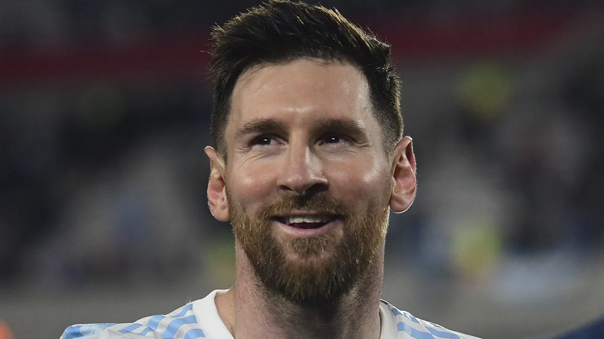

ACERCA DE MI
Futbolista con 25 años de experiencia en clubes como F.C. Barcelona (Fútbol Club Barcelona), P.S.G (Paris Saint- Germain Football Club) y A.F.A (Selección de Fútbol Argentina), en los cuales me desempeñé como delantero o centrocampista. Experiencia en liderazgo de equipo, ganador de númerosos premios y reconocimientos a nivel mundial. Poseo habilidades de resolución de problemas, trabajar bajo presión, creatividad y destreza en el campo de juego.
IDIOMAS
- Español
- Catalán
- Inglés
CONTACTO
Instagram Facebook YouTubeDeje su mensaje
FORMACIÓN
Educación Primaria
Escuela primaria N°66 "General Las Heras". Rosario, Santa Fe, Argentina.
Educación Secundaria
Escuela "Lleó XIII de Sant Gervasi". Barcelona, España.
Categorías Inferiores de Fútbol
- Newell's Old Boys (1994-1999)
- F.C.Barcelona (2000-2005)
CARRERA DEPORTIVA
- F.C. Barcelona (2005-2021)
- Delantero, centrocampista. #10, capitán del equipo desde 2018 hasta 2021.
- A.F.A Selección Argentina de Fútbol (2004- presente)
- Delantero, centrocampista. Actualmente #10 y capitán del equipo.
- P.S.G Paris Saint-Germain Football Club (2021-presente)
- Delantero, centrocampista. Copas y records
PREMIOS INDIVIDUALES
- Balón de Oro
- 2009, 2010, 2011, 2012, 2015, 2019, 2021
- FIFA World Player
- 2009
- Premio The Best
- 2019
- Bota de Oro
- 2009/10, 2011/12, 2012/13, 2016/17, 2017/18, 2018/19
- Premio Laureus
- 2019
- Pichichi de LaLiga
- 2009/10, 2011/12, 2012/13, 2016/17, 2017/18, 2018/19, 2019/20, 2020/21
- MVP LaLiga
- 2008/09, 2009/10, 2010/11, 2011/12, 2012/13, 2014/15, 2016/17, 2017/18, 2018/19
- Máximo goleador Champions
- 2008/09, 2009/10, 2010/11, 2011/12, 2014/15, 2018/19
- Trofeo Bravo
- 2007
- FIFA FIFPro
- 2006
- Balón de Oro Mundial
- 2014, 2022
- Mejor Jugador Europa
- 2010/11, 2014/15
- Golden Boy
- 2005
- MVP Copa América
- 2015, 2021
- Onze d'Or
- 2009, 2011, 2012, 2018